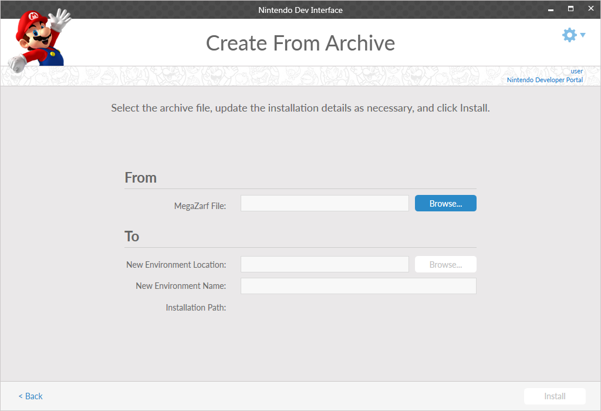

This screen enables the creation of an environment using a provided MegaZarf file. A MegaZarf file contains the information required to recreate an environment that was previously created in Nintendo Dev Interface (NDI). The fields are as follows.
-
MegaZarf File: Specifies the MegaZarf used to create an environment, including the directory to the file location. Use the Browse button to navigate and select the MegaZarf on the file system.
-
New Environment Name: The name that the created environment is referred to by NDI.
-
New Environment Location: The directory location in the system where the environment will be located.
Info
- Two environments with same name cannot reside in the same location.
- When creating a MegaZarf, the user may choose to require the MegaZarf to be installed with a particular name or location. In this case, these fields may not be modified.
- Instead of opening NDI, the user may double-click on the MegaZarf from the PC's desktop. NDI will then open to the Create From Archive screen with the indicated MegaZarf already selected.